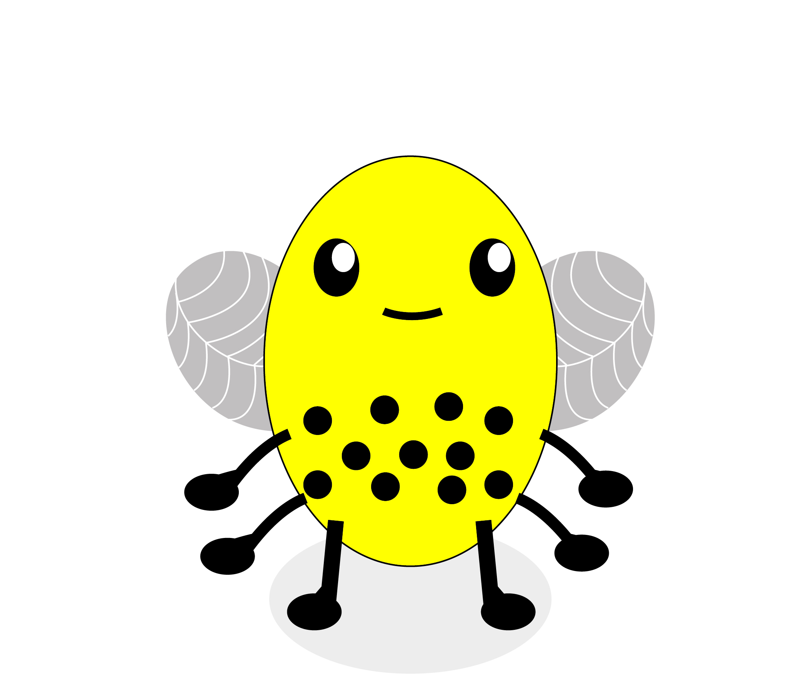

<!DOCTYPE html>

<html>
  <head>
    <meta charset="utf-8">
    <meta name="viewport" content="width=device-width, initial-scale=1, shrink-to-fit=no">
    <title>UNSW Monsters Game</title>
    <script src="./js/jspsych.js"></script>
    <script src="./js/plugins/jspsych-instructions.js"></script>
    <script src="./js/plugins/jspsych-html-keyboard-response.js"></script>
    <script src="./js/plugins/jspsych-html-button-response.js"></script>
    <script src="./js/plugins/jspsych-image-keyboard-response.js"></script>
    <script src="./js/plugins/jspsych-external-html.js"></script>
    <script src="./js/plugins/jspsych-survey-html-form.js"></script>
    <script src="./js/plugins/jspsych-survey-multi-choice.js"></script>   
    <script src="./js/welcome.js"></script>
    <script src="./js/jquery.min.js"></script>
    <link href="./js/css/jspsych.css" rel="stylesheet" type="text/css"></link>
  </head>

  <body>
    <div id="welcome"></div>
  </body>


  <script>

  // var relevantDim = ['L', 'B'];


  // run the welcome
  welcome.run();


    // -------- Set up --------
    /* initialise timeline*/
    var timeline=[];
    var turkcode = 'C' + (Math.floor(Math.random() * 899999) + 100000).toString();
	  var images = [
      './img/avoid.png',
      './img/blockimage.png',
      './img/droplet.png',
      './img/honeycomb.png',
      './img/instr_outcomes_fullinfo.png',
      './img/instr_outcomes_standard.png',
      './img/instr_outcomes_test.png',
      './img/instrantennae.png',
      './img/instrlegs.png',
      './img/instrstripes.png',
      './img/instrwings.png',
      './img/stinger.png',
      './img/stingeravoid.png',

      './img/A0-B0-L0-W0.jpg',
      './img/A0-B0-L0-W1.jpg',
      './img/A0-B0-L1-W0.jpg',
      './img/A0-B0-L1-W1.jpg',
      './img/A0-B1-L0-W0.jpg',
      './img/A0-B1-L0-W1.jpg',
      './img/A0-B1-L1-W0.jpg',
      './img/A0-B1-L1-W1.jpg',
      './img/A1-B0-L0-W0.jpg',
      './img/A1-B0-L0-W1.jpg',
      './img/A1-B0-L1-W0.jpg',
      './img/A1-B0-L1-W1.jpg',
      './img/A1-B1-L0-W0.jpg',
      './img/A1-B1-L0-W1.jpg',
      './img/A1-B1-L1-W0.jpg',
      './img/A1-B1-L1-W1.jpg',
	   ];


    // function to start the jsPsych experiment
    function startExperiment(){

      function download_data(data) {
        var csvString = jsPsych.data.dataAsCSV();
        var a         = document.createElement('a');
        a.href        = 'data:attachment/csv,' + csvString;
        a.target      = '_blank';
        a.download    = 'ExperimentData.csv';

        document.body.appendChild(a);
        a.click();
      }
      // record the turkcode in the jsPsych data
      jsPsych.data.addProperties({
        turkcode: turkcode
      });

      jsPsych.init({
        timeline: timeline,
        preload_images: images,
        on_finish: function() {
          jsPsych.data.get().localSave('csv','test.csv')
         },  // uncomment to locally save data file
        /*on_finish: function() {
          endExperiment(jsPsych.data.get().csv(), function() {document.write('<div id="endscreen" class="endscreen" style="width:1000px"><div class="endscreen" style="text-align:center; border:0px solid; padding:10px; font-size:120%; width:800px"><p><br><br><br>You\'re all done!</p></div></div>') }
        )}, // uncomment for cloud save */
        show_progress_bar: false,
        auto_update_progress_bar: false
      });
      }


    // function to end the experiment
    function endExperiment(dataset,callback) {
      // $.post('submit',{"content": dataset}); // uncomment to post data
      console.log(dataset) // comment out to avoid console log
      setTimeout(callback,1000)
      // setTimeout specifies after a certain no of milliseconds
    }


    // -------- set up accumulating variables
    var i = 0; // for showing the next stimulis
    
    // -- for points
    var pointsInitial = 0;
    var pointsAdded = 0;
    var totalPoints = 0;

    function addNum(pointsInitial,pointsAdded){
      return pointsInitial+pointsAdded
    };
    var pointsCurrent = addNum(pointsInitial,pointsAdded);

    pointsCurrent = addNum(pointsCurrent,pointsAdded);

 

    // -------- Randomisation set up

  function shuffle(array) {
    var currentIndex = array.length, temporaryValue, randomIndex;

    // While there remain elements to shuffle...
    while (0 !== currentIndex) {

      // Pick a remaining element...
      randomIndex = Math.floor(Math.random() * currentIndex);
      currentIndex -= 1;

      // And swap it with the current element.
      temporaryValue = array[currentIndex];
      array[currentIndex] = array[randomIndex];
      array[randomIndex] = temporaryValue;
    }

    return array;
  }
 
  // ------- Condition
  var condition = ['full', 'partial'];
  var condition = jsPsych.randomization.sampleWithoutReplacement(condition, 1)[0]; // not sure what this does
  jsPsych.data.addProperties({
          condition: condition
        });

  
  
  // ------- Bee stimuli

  var bees_OG = shuffle(
    [
      'A0-B0-L0-W0',
      'A0-B0-L0-W1',
      'A0-B0-L1-W0',
      'A0-B0-L1-W1',
      'A0-B1-L0-W0',
      'A0-B1-L0-W1',
      'A0-B1-L1-W0',
      'A0-B1-L1-W1',
      'A1-B0-L0-W0',
      'A1-B0-L0-W1',
      'A1-B0-L1-W0',
      'A1-B0-L1-W1',
      'A1-B1-L0-W0',
      'A1-B1-L0-W1',
      'A1-B1-L1-W0',
      'A1-B1-L1-W1'
    ]   
  );
 
function make_bees(){

    var bees_dangerous = shuffle([
    'A1-B1-L1-W0',
    'A1-B1-L1-W1',
    'A0-B1-L1-W0',
    'A0-B1-L1-W1',
  ]);

  var bees_friendly = shuffle([
    'A0-B0-L0-W0',
    'A0-B0-L0-W1',
    'A0-B0-L1-W0',
    'A0-B0-L1-W1',
    'A0-B1-L0-W0',
    'A0-B1-L0-W1',
    'A1-B0-L0-W0',
    'A1-B0-L0-W1',
    'A1-B0-L1-W0',
    'A1-B0-L1-W1',
    'A1-B1-L0-W0',
    'A1-B1-L0-W1',
  ]);

  var bees_dangerous_1 = bees_dangerous.slice(0,2); //dangerous bees for first subblock of block, 2 dangerous
  var bees_friendly_1 = bees_friendly.slice(0,6); // friendly bees for first subblock of block, 6 friendly
  var bees_dangerous_2 = bees_dangerous.slice(2,); // '' for second subblock of block, 2 dangerous
  var bees_friendly_2 = bees_friendly.slice(6,); // '' for second subblock of block, 6 friendly

  var first_subblock = shuffle(bees_dangerous_1.concat(bees_friendly_1)); // combine friendly and dangerous and shuffle to form first subblock
  var second_subblock = shuffle(bees_dangerous_2.concat(bees_friendly_2)); //combine friendly and dangerous and shuffle to form second subblock
  var beesStim = first_subblock.concat(second_subblock);
  return beesStim;

 };

var bees = []; // initiate bees array

for (var j = 0; j < 10; j++) {
    bees = bees.concat(make_bees());  // now repeat the make_bees function 10 times, concatenating each time
}                                     

// take the first 128 bees for learning phase, leave 32 for test phase.

var LP_bees = bees.slice(0,128); // Learning phase bees
var TP_bees = bees.slice(128,); // Test phase bees


// -------- Instructions & quiz --------

  var instruct_1 = {
  type:'external-html',
  url: "./pages/instruct-1.html",
  cont_btn: "next",
  execute_script: true,
  };

  var instruct_2 = {
  type:'external-html',
  url: "./pages/instruct-2.html",
  cont_btn: "next",
  execute_script: true,
  };

  var instruct_3 = {
  type:'external-html',
  url: "./pages/instruct-3.html",
  cont_btn: "next",
  };

  var instruct_ready = {
  type:'external-html',
  url: "./pages/instruct-ready.html",
  cont_btn: "next",
  };


  
// The set of instructions for the Full Feedback Condition
var instructionsFull = {
    type: 'instructions',
    pages: ['</img>',
    '</img>',
    '</img>'
    ],
    show_clickable_nav: true,
};

 // timeline.push(instructionsFull);
 
    // The set of instructions for the Partial Feedback Condition
var instructionsPartial = {
    type: 'instructions',
    pages: ['</img>',
    '</img>',
    '</img>'
    ],
    show_clickable_nav: true,
  };

// comprehension check

var quiz = {
  type: 'html-button-response',
  stimulus: "<p><b> COMPREHENSION CHECK </b></p>"+
            "<p> Before beginning the experiment, you must answer a few simple questions to ensure you have read the instructions. If you do not answer all questions correctly, you will be returned to the start of the instructions and have a chance to retake this quiz. </p>",
  choices: ['Start Quiz'],
  prompt: ""
};

 // timeline.push(instructionsPartial);

 // baseline for the instructionscorrect variable
var instructioncorrectFull = false;
var instructioncorrectPartial = false;

//Questions for the Full Feedback Condition

    var Q1_text = ["<b>Question 1:</b> Which of the following are features of the bee varieties?"];
    var Q1_answers = ["Two or Six Legs", "Square or Round Body", "Single or Compound Eyes", "Stripes or Spots on body", "Stinger or no stinger", "single or double wings", "Tall or short body", "Antennae or no antennae"];
    
    var Q2_text = ["<b>Question 2:</b> Can a bee variety change from being friendly to dangerous or dangerous to friendly over time?"];
    var Q2_answers = ["Yes", "No"];
    
    var Q3_text = ["<b>Question 3:</b> How can you learn to tell whether a bee variety is dangerous?"];
    var Q3_answers = ["Based on the colour of the bee", "Based on the four features of the bee", "Based on the order in which you see the bees"];

    var Q4_text = ["<b> Question 4:</b> What happens when you avoid a bee variety?"]
    var Q4_answers = ["You do not learn if it was friendly or dangerous, and do not alter your bonus", "You learn if it was friendly or dangerous, but do not alter your bonus", "You learn if it was friendly or dangerous and alter your bonus"]

    var correctstringFull = ['{"Q0":"' + Q1_answers[0] + '","Q1":"' + Q2_answers[1] + '","Q2":"' + Q3_answers[1] + '","Q3":"' + Q4_answers[2] + '"}'];
    var correctstringPartial = ['{"Q0":"' + Q1_answers[0] + '","Q1":"' + Q2_answers[1] + '","Q2":"' + Q3_answers[1] + '","Q3":"' + Q4_answers[2] + '"}'];


// Variable to display if questions answered incorrectly for FULL
var splash_screen = {
        type: 'html-button-response',
        timing_post_trial: 0,
	    choices: ['Click here to read the instructions again'],
        is_html: true,
        stimulus: 'Unfortunately, at least one of your answers was incorrect.' + 
		"<p> "
    };

//timeline push to display the above
    var conditional_splashFull = {
        timeline: [splash_screen],
        conditional_function: function(data) {
			return !instructioncorrectFull // skip if correct
        }
    };

//timeline push to display the above
var conditional_splashPartial = {
        timeline: [splash_screen],
        conditional_function: function(data) {
			return !instructioncorrectPartial // skip if correct
        }
    };

// Variable to display if questions answered incorrectly for PARTIAL
    var splash_screen = {
        type: 'html-button-response',
        timing_post_trial: 0,
	    choices: ['Click here to read the instructions again'],
        is_html: true,
        stimulus: 'Unfortunately, at least one of your answers was incorrect.' + 
		"<p> "
    };

//timeline push to display the above
    var conditional_splash = {
        timeline: [splash_screen],
        conditional_function: function(data) {
			return !instructioncorrectPartial // skip if correct
        }
    };

// Instruction Check for FULL
var instruction_checkFull = {
        type: "survey-multi-choice",
        preamble: ["<p align='center'><b>Check your knowledge before you begin!</b></p>"],
        questions: [
			{prompt: Q1_text, options: Q1_answers, required: true,},
            {prompt: Q2_text, options: Q2_answers, required: true,}, 
            {prompt: Q3_text, options: Q3_answers, required: true,},
            {prompt: Q4_text, options: Q4_answers, required: true,}, 
			],
		on_finish: function(data) {
            if( data.responses == correctstringFull) {
				action = false;
                		instructioncorrectFull = true; // If responses match answer string, variable changes to proceed. 
			};
        },
    };

    // Instruction Check for FULL
var instruction_checkPartial = {
        type: "survey-multi-choice",
        preamble: ["<p align='center'><b>Check your knowledge before you begin!</b></p>"],
        questions: [
			{prompt: Q1_text, options: Q1_answers, required: true,},
            {prompt: Q2_text, options: Q2_answers, required: true,}, 
            {prompt: Q3_text, options: Q3_answers, required: true,},
            {prompt: Q4_text, options: Q4_answers, required: true,}, 
			],
		on_finish: function(data) {
            if( data.responses == correctstringPartial) {
				action = false;
                		instructioncorrectPartial = true; // If responses match answer string, variable changes to proceed. 
			};
        },
    };


// Loop Nodes

var loop_nodeFull = {
    timeline: [instructionsFull, instruction_checkFull, conditional_splashFull],
    loop_function: function(data) {
        //var action = true;
  return !instructioncorrectFull // stop looping if correct
    }
};

var loop_nodePartial = {
    timeline: [instructionsPartial, instruction_checkPartial, conditional_splashPartial],
    loop_function: function(data) {
        //var action = true;
  return !instructioncorrectPartial // stop looping if correct
    }
};

// for statement to run

function experimentInstruction(){
if (condition == 0) {
   return [timeline.push(loop_nodeFull)]
}
else 
    return [timeline.push(loop_nodePartial)]
};

var startExp = {
    timeline: experimentInstruction()
};

timeline.push(startExp)

// success trial if comprehension check responses correct
var successtrial = {
  type: 'html-button-response',
  timing_post_trial: 0,
  choices: ['Click here to begin the experiment'],
  on_trial_start: function() { setTimeout(function() {setDisplay("jspsych-btn","")}, 500)},
  is_html: true,
  stimulus: 'Well done! You answered all the questions correctly.'
};
timeline.push(successtrial); 

/*var quiz = {
  type:'survey-html-form',
  html: '<pBefore beginning the experiment, you must answer a few simple questions to ensure you have read the instructions. If you do not answer all questions correctly, you will be returned to the start of the instructions and have a chance to retake this quiz.</p>' +
  '<p>Which of the following are features of the bee varieties?</p>' +
  '<input type="checkbox" name="featurelist" value="legs">Two or six legs <br> ' +
  '<input type="checkbox"  name="featurelist" value="square">Square or round body <br>' +
  '<input type="checkbox"  name="featurelist" value="eyes">Single or compound eyes <br>' +
  '<input type="checkbox"  name="featurelist" value="body">Stripes or spots on body <br>' +
  '<input type="checkbox"  name="featurelist" value="sting">Stinger or no stinger <br>'+
  '<input type="checkbox"  name="featurelist" value="wings">Single or double wings <br>' +
  '<input type="checkbox"  name="featurelist" value="tall">Tall or short body <br>' +
  '<input type="checkbox" name="featurelist" value="antennae">Antennae or no antennae' +
  '<p>Can a bee variety change from being friendly to dangerous or dangerous to friendly over time?</p>' +
  '<select id="change" name="change" class="form-control">' +
  '   <option value="noresp" SELECTED></option>' +
	'   <option value="yes">yes</option>' +
	'   <option value="no">no</option>' +
  '</select> <br>' +
  '<p>How can you learn to tell whether a bee variety is dangerous?</p>' +
  '<select id="telldangerous" name="telldangerous" class="form-control">' +
  '   <option value="noresp" SELECTED></option>' +
	'   <option value="color">Based on the color of the bee</option>' +
	'   <option value="feature">Based on the four features of the bee</option>' +
  '   <option value="smoke">Based on the order in which you see the bees</option>' +
  '</select> <br>' +
  '<p>What happens when you avoid a bee variety?</p>' +
  '<select id="avoidinfo" name="avoidinfo" class="form-control">' +
  '   <option value="noresp" SELECTED></option>' +
	'   <option value="noInfo">You do not learn if it was friendly or dangerous, and do not alter your bonus.</option>' +
	'   <option value="info">You learn if it was friendly or dangerous, but do not alter your bonus.</option>' +
	'   <option value="infoPlusBonus">You learn if it was friendly or dangerous and alter your bonus.</option>' +
  '</select> <br>'
,
  preamble: 'Comprehension Check',
  button_label: 'Submit',
}; */

 /*timeline.push(instruct_1);
  timeline.push(instruct_2);
  timeline.push(instruct_3); */
  timeline.push(quiz);
  timeline.push(instruct_ready);

  // functions for feedback displays
  function showActualPoints(){
      var lastChoice = jsPsych.data.get().last(1).values()[0].button_pressed; // get last avoid/approach decision
      var lastBee = jsPsych.data.get().last(1).values()[0].stimulus; // get last bee shown
      if (lastChoice == 0 && (lastBee == "" || lastBee == "" || lastBee == "" || lastBee == "")) { 
        return pointsAdded = -3;
      } else if (lastChoice == 0){
        return pointsAdded = 1;
      } else {
        return pointsAdded = 0;
      }
    };

  /*function showForgonePoints(){
      var lastChoice = jsPsych.data.get().last(1).values()[0].button_pressed; // get last avoid/approach decision
      var lastBee = jsPsych.data.get().last(1).values()[0].stimulus; // get last bee shown   
      if (lastBee == "" || lastBee == "" || lastBee == "" || lastBee == "") { 
          return "-3";
        } else {
          return "1";
      } 
    };*/
 
  function showForgonePoints(){
    var lastChoice = jsPsych.data.get().last(1).values()[0].button_pressed; // get last avoid/approach decision
    var lastBee = jsPsych.data.get().last(1).values()[0].stimulus; // get last bee shown   
    if (lastBee == "" || lastBee == "" || lastBee == "" || lastBee == "") { 
        return pointsForgone = -3;
      } else {
        return pointsForgone = 1;
    } 
  };
  /*function ffAvoidFeedback(){
    return "Earned: " + pointsAdded + "<br> If harvested: " + showForgonePoints()
  }; */

  function ffAvoidFeedback(){
    showForgonePoints();
    if (pointsForgone == -3) {
      return "Whew, you avoided being stung! You earned <b>" + pointsAdded + " </b> points."
    } else if (pointsForgone == 1) {
      return "Oops, you avoided a friendly hive. You earned <b>" + pointsAdded + " </b>points."
    }
  };

  
    // -------- the experiment itself -------
   
    // the learning phase
    var decision_LP = {
        type: 'html-button-response',
        stimulus: function(){
          return ""
        },
        prompt: "<p> Harvest honey from this hive? </p>",
        choices: ['Harvest', 'Avoid'],
        on_finish: function(data){
          i = i + 1;
          return showActualPoints();
        },
        counter_displayed: function(data){
          return pointsCurrent;
        },
    };

    var feedbackPartial = {
      type: 'html-keyboard-response',
      is_html:true,
      choices: jsPsych.NO_KEYS,
      trial_duration: 2000,
      stimulus: function(){
        if (pointsAdded == 0) {
          return "You avoided this hive. You earned <b>" + pointsAdded + " </b>points."
        }
        else if (pointsAdded == 1){
          return "You successfully harvested honey! You earned <b>" + pointsAdded + " </b>point."
        } else {
          return "Ouch, you were stung! You lost <b>" + pointsAdded + " </b>points." // maybe change to "you lost 3 points" rather than "lost -3"
        }
      },
      on_finish: function(data){
        pointsCurrent = pointsCurrent + pointsAdded;
        data.earnedThis = pointsAdded;
        data.earnedCumulative = pointsCurrent;
      }
    };

    var feedbackFull = {
      type: 'html-keyboard-response',
      is_html:true,
      choices: jsPsych.NO_KEYS,
      trial_duration: 2000,
      on_start: function(){
        return pointsAdded;
      },
      stimulus: function(){
        if (pointsAdded == 1){
          return "You successfully harvested honey! You earned <b>" + pointsAdded + " </b>point."
        } else if (pointsAdded == -3){
          return "Ouch, you were stung! You lost <b>" + pointsAdded + " </b>points."
        } else {
          return ffAvoidFeedback()
        }
      },
      on_finish: function(data){
        pointsCurrent = pointsCurrent + pointsAdded;
        data.earnedThis = pointsAdded;
        data.earnedCumulative = pointsCurrent;
      }
    };


    // conditional thing for trials timeline
    function conditionalTimeline(){
      if (condition == 'partial'){
        return [decision_LP, feedbackPartial];
      } else {
        return [decision_LP, feedbackFull];
      }
    };

    //
    var learningPhase = {
      timeline: conditionalTimeline(),
      repetitions: 2, //16,
      randomize_order: true
    };
            
  timeline.push(learningPhase);

  var TP_instructions = {
  type:'external-html',
  url: "./pages/testinstr.html",
  cont_btn: "next",
  };
  timeline.push(TP_instructions);

  // the test phase
  var decision_TP = {
        type: 'html-button-response',
        stimulus: function(){
          return ""
        },
        prompt: "<p> Harvest honey from this hive? </p>",
        choices: ['Harvest', 'Avoid'],
        on_finish: function(data){
          i = i + 1;
        },
    };

  var feedbackTP = {
    type: 'html-keyboard-response',
    is_html:true,
    choices: jsPsych.NO_KEYS,
    trial_duration: 1400,
    on_start: function(){
      var lastChoice = jsPsych.data.get().last(1).values()[0].button_pressed; // get last avoid/approach decision
      var lastBee = jsPsych.data.get().last(1).values()[0].stimulus; // get last bee shown
      if (lastChoice == 0 && (lastBee == "" || lastBee == "" || lastBee == "" || lastBee == "")) { 
        return pointsAdded = -3;
      } else if (lastChoice == 0){
        return pointsAdded = 1;
      } else {
        return pointsAdded = 0;
      }
    },
    stimulus: '', // don't show anything, move accumulating bit to on_start
    on_finish: function(data){
      pointsCurrent = pointsCurrent + pointsAdded;
      data.earnedThis = pointsAdded;
      data.earnedCumulative = pointsCurrent;
    }
  };

  var testPhase = {
    timeline: [decision_TP, feedbackTP],
    repetitions: 2,
    randomize_order: false,
  };

  timeline.push(testPhase);


  // bonus
  function calculateBonus(){
    if (pointsCurrent<0) {
      return 0;
      } else {
      return pointsCurrent/20;
      }
  };

  //game completion screen
  var finished = {
    type: 'html-button-response',
    stimulus: function(){
      return 'You are all done with the beekeeper game! <br><br>You earned <b>' + pointsCurrent + '</b> points, <br> which equals a bonus of $' + calculateBonus();
    },
    on_finish:   jsPsych.data.addProperties({
        bonus: calculateBonus()
      }),
    choices: ['Done!'],
  };

  timeline.push(finished);
  
// posttask questionnaire

var endquestions = {
  type: 'survey-html-form',
  preamble: 'Finished harvesting honey!',
  html: '<p> We have a couple of short questions before you complete the experiment:</p>'+
  '<p>About what percentage of beehives do you think contained dangerous bees? (enter a value between 0 and 100.)</p>' +
  '<input type="number" id="dangerpercent" name="dangerpercent">'+
  '<p>Which features do you think were useful for deciding whether a bee variety was friendly or dangerous?</p>' +
  '<input type="checkbox" name="dimensions" value="legs">Two or six legs<br>' +
  '<input type="checkbox"  name="dimensions" value="body">Stripes or spots on body<br>' +
  '<input type="checkbox"  name="dimensions" value="wings">Single or double wings<br>' +
  '<input type="checkbox" name="dimensions" value="antennae">Antennae or no antennae<br>' +
  '<p>Did you use pen and paper or another external aid during the task? (Please be honest, your payment will not be affected!) </p>' +
  '        <select id="penpaper" name="penpaper" class="form-control">' +
  '        <option value="noresp" SELECTED></option> <br>' +
  '        <option value="no">no</option> <br>' +
  '        <option value="yes">yes</option> <br>' +
  '      </select> <br>',
  button_label: 'Continue',
};

var questionnaire = {
  type: 'survey-html-form',
  preamble: 'Complete',
  html:'<p>You are almost done!</p>' +
  '<p>Congratulations, you are finished!  You will be eligible for payment once you answer the following questions.</p>' +
  '<p>On a scale of 1-10 (where 10 is the most engaged), please rate how <b>ENGAGING</b> you found this task:</p>' +
  '      <select id="engagement" name="engagement">' +
  '             <option value="noresp" SELECTED></option><br>' +
  '             <option value="10">10 - Very engaging</option><br>' +
  '             <option value="9">9</option><br>' +
  '             <option value="8">8</option><br>' +
  '             <option value="7">7</option><br>' +
  '             <option value="6">6</option><br>' +
  '             <option value="5">5 - Moderately</option><br>' +
  '             <option value="4">4</option><br>' +
  '             <option value="3">3</option><br>' +
  '             <option value="2">2</option><br>' +
  '             <option value="1">1</option><br>' +
  '             <option value="0">0 - Not engaged</option><br>' +
  '      </select>',
  button_label: 'Continue',
};

timeline.push(endquestions);
timeline.push(questionnaire);

  </script>
</html>
